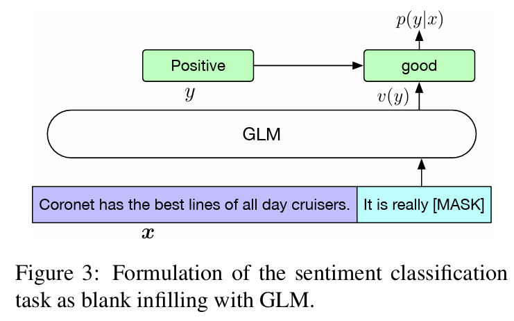

ChatGLM系列模型架构
1.ChatGLM
1.1 背景
主流的预训练框架主要有三种：
- autoregressive自回归模型（AR模型）：代表作GPT。本质上是一个left-to-right的语言模型。通常用于生成式任务，在长文本生成方面取得了巨大的成功，比如自然语言生成（NLG）领域的任务：摘要、翻译或抽象问答。当扩展到十亿级别参数时，表现出了少样本学习能力。缺点是单向注意力机制，在NLU任务中，无法完全捕捉上下文的依赖关系。
- autoencoding自编码模型（AE模型）：代表作BERT。是通过某个降噪目标（比如MLM）训练的双向文本编码器。编码器会产出适用于NLU任务的上下文表示，但无法直接用于文本生成。
- encoder-decoder（Seq2seq模型）：代表作T5。采用双向注意力机制，通常用于条件生成任务，比如文本摘要、机器翻译等。
三种预训练框架各有利弊，没有一种框架在以下三种领域的表现最佳：自然语言理解（NLU）、无条件生成以及条件生成。T5曾经尝试使用MTL的方式统一上述框架，然而自编码和自回归目标天然存在差异，简单的融合自然无法继承各个框架的优点。
在这个天下三分的僵持局面下，GLM诞生了。
GLM模型基于autoregressive blank infilling方法，结合了上述三种预训练模型的思想。
1.2 GLM预训练框架
GLM特点
- 自编码思想：在输入文本中，随机删除连续的tokens。
- 自回归思想：顺序重建连续tokens。在使用自回归方式预测缺失tokens时，模型既可以访问corrupted文本，又可以访问之前已经被预测的spans。
- span shuffling + 二维位置编码技术。
- 通过改变缺失spans的数量和长度，自回归空格填充目标可以为条件生成以及无条件生成任务预训练语言模型。
（1）自回归空格填充任务
给定一个输入文本$x=\left[x{1}, \ldots x{n}\right]$，可以采样得到多个文本spans $\left{s{1}, \ldots s{m}\right}$。为了充分捕捉各spans之间的相互依赖关系，可以对spans的顺序进行随机排列，得到所有可能的排列集合$Zm$，其中：$S{z<i}=\left[s{z{1}}, \ldots, s{z{i-1}}\right]$。所以预训练目标很清晰：
GLM自回归空格填充任务的技术细节：
- 输入$x$可以被分成两部分：Part A是被mask的文本 $x_{\text {corrupt }}$，Part B由masked spans组成。假设原始输入文本是$[x1, x2, x3, x4, x5, x6]$，采样的两个文本片段是$[x3]$以及$[x5, x6]$。那么mask后的文本序列是：$x1, x2, [M], x4, [M]$，即Part A；同时我们需要对Part B的片段进行shuffle。每个片段使用
[S]填充在开头作为输入，使用[E]填充在末尾作为输出。 - 二维位置编码：Transformer使用位置编码来标记tokens中的绝对和相对位置。在GLM中，使用二维位置编码，第一个位置id用来标记Part A中的位置，第二个位置id用来表示跨度内部的相对位置。这两个位置id会通过embedding表被投影为两个向量，最终都会被加入到输入token的embedding表达中。
- 观察GLM中自定义attention mask的设计，非常巧妙：
- Part A中的tokens彼此可见，但是不可见B中的任意tokens。
- Part B tokens可见Part A。
- Part B tokens可见B中过去的tokens，不可见B中未来的tokens。
- 采样方式：文本片段的采样遵循泊松分布，重复采样，直到原始tokens中有15%被mask。
- 总结：模型可以自动学习双向encoder（Part A）以及单向decoder（Part B）。

（2）多目标预训练
上述方法适合于NLU任务。作者希望可以训练一个既可以解决NLU任务，又具备文本生成能力的模型。因此除了空格填充目标之外，还需要增加一个生成长文本目标的任务。具体包含以下两个目标：
- 文档级别。从文档中采样一个文本片段进行mask，且片段长度为文档长度的50%～100%。这个目标用于长文本生成。
- 句子级别。限制被mask的片段必须是完整句子。多个片段需覆盖原始tokens的15%。这个目标是用于预测完整句子或者段落的seq2seq任务。
（3）模型结构
GLM在原始single Transformer的基础上进行了一些修改：
- 重组了LN和残差连接的顺序；
- 使用单个线性层对输出token进行预测；
- 激活函数从ReLU换成了GeLUS。
但我觉得这部分的修改比较简单常见。核心和亮点还是空格填充任务的设计。
（4）GLM微调
对于下游NLU任务来说，通常会将预训练模型产出的序列或tokens表达作为输入，使用线性分类器预测label。所以预训练与微调之间存在天然不一致。
作者按照PET的方式，将下游NLU任务重新表述为空白填充的生成任务。具体来说，比如给定一个已标注样本(x, y)，将输入的文本x转换成一个包含mask token的完形填空问题。比如，情感分类任务可以表述为：”{SENTENCE}. It’s really [MASK]”。输出label y也同样会被映射到完形填空的答案中。“positive” 和 “negative” 对应的标签就是“good” 和 “bad。
其实，预训练时，对较长的文本片段进行mask，以确保GLM的文本生成能力。但是在微调的时候，相当于将NLU任务也转换成了生成任务，这样其实是为了适应预训练的目标。但难免有一些牵强。

| BERT | XLNet | T5 | UniLM |
| 1、无法捕捉mask tokens的相互依赖性。2、不能准确填充多个连续的tokens。为了推断长度为l的答案概率，BERT需要执行l次连续预测。 | 与GLM相同，使用自回归目标预训练。1、使用文本mask之前的原始位置编码，推理过程中，需要事先知晓或枚举答案长度，与BERT的问题相同。2、双流自注意力机制，使预训练时间成本增加了一倍。 | 使用类似的空格填充目标预训练encoder-decoder Transformer。在编码和解码阶段使用独立的位置编码，使用多个哨兵token来区分mask片段。而在下游任务中，仅使用一个哨兵token，造成模型能力的浪费以及预训练-微调的不一致。 | 通过改变双向、单向以及交叉注意力之间的注意力mask，统一不同的预训练目标。1、总是使用[mask] token替代mask片段，限制了它对mask片段及其上下文的依赖关系进行建模的能力。2、在下游任务微调时，自编码比自回归更加低效。 |
2.ChatGLM-2
2.1 主要创新
- 更长的上下文：基于 FlashAttention 技术，将基座模型的上下文长度（Context Length）由 ChatGLM-6B 的 2K 扩展到了 32K，并在对话阶段使用 8K 的上下文长度训练。对于更长的上下文，发布了 ChatGLM2-6B-32K 模型。LongBench 的测评结果表明，在等量级的开源模型中，ChatGLM2-6B-32K 有着较为明显的竞争优势。
- 更强大的性能：基于 ChatGLM 初代模型的开发经验，全面升级了 ChatGLM2-6B 的基座模型。ChatGLM2-6B 使用了 GLM 的混合目标函数，经过了 1.4T 中英标识符的预训练与人类偏好对齐训练，评测结果显示，相比于初代模型，ChatGLM2-6B 在 MMLU（+23%）、CEval（+33%）、GSM8K（+571%） 、BBH（+60%）等数据集上的性能取得了大幅度的提升，在同尺寸开源模型中具有较强的竞争力。
- 更高效的推理：基于 Multi-Query Attention 技术，ChatGLM2-6B 有更高效的推理速度和更低的显存占用：在官方的模型实现下，推理速度相比初代提升了 42%，INT4 量化下，6G 显存支持的对话长度由 1K 提升到了 8K。
- 更开放的协议：ChatGLM2-6B 权重对学术研究完全开放，在填写问卷进行登记后亦允许免费商业使用。
2.2 与ChatGLM的变化
- 使用了RoPE替换二维位置编码。这也是GLM中提出的亮点设计之一。但是目前大部分主流的LLMs都在使用RoPE，所以大势所趋。当前版本仍然采用了最初的RoPE设计，事实上现在的RoPE经过了xPOS→线性内插→NTK-Aware Scaled RoPE→…若干次进化。
- Multi-Query Attention：这是一种共享机制的Attention，相比Multi-Head Attention，其Query部分没有区别，Key和Value可以只用一个Head。计算时，对Key和Value进行expand或者repeat操作，使它们填充到与Query一样的维度，后续计算就与Multi-Head Attention没区别。
- Attention Mask: V1的attention mask分了2部分，Part A和Part B，Part A部分是双向Attention（代码中的prefix_attention_mask），Part B部分是Causal Attention(原代码文件中的get_masks函数)。在V2版本，全部换成了Causal Attention，不再区分是Part A还是Part B，完全变成了decoder-only的架构。
- 多目标任务：Chat版本主要还是用的gMask生成式任务，但是在V1版本的代码还能看到mask、gMask等字样，V2已经摒弃了这些特殊token，原因与Attention Mask一致，均因为变成了decoder-only的架构，不再需要区分Part A和Part B。
3.ChatGLM-3
省流：ChatGLM2与ChatGLM3模型架构是完全一致的，ChatGLM与后继者结构不同。可见ChatGLM3相对于ChatGLM2没有模型架构上的改进。
相对于ChatGLM，ChatGLM2、ChatGLM3模型上的变化：
- 词表的大小从ChatGLM的150528缩小为65024 （一个直观的体验是ChatGLM2、3加载比ChatGLM快不少）
- 位置编码从每个GLMBlock一份提升为全局一份
- SelfAttention之后的前馈网络有不同。ChatGLM用GELU（Gaussian Error Linear Unit）做激活；ChatGLM用Swish-1做激活。而且ChatGLM2、3应该是修正了之前的一个bug，因为GLU（Gated Linear Unit）本质上一半的入参是用来做门控制的，不需要输出到下层，所以ChatGLM2、3看起来前后维度不一致（27392->13696)反而是正确的。
4.模型架构比较
1 | tokenizer = AutoTokenizer.from_pretrained(model_path, trust_remote_code=True) |
ChatGLM的模型结构：
1 | ChatGLMForConditionalGeneration( |
ChatGLM2的模型结构：
1 | ChatGLMForConditionalGeneration( |
ChatGLM3的模型结构：
1 | ChatGLMForConditionalGeneration( |